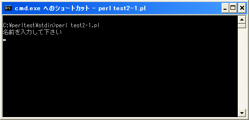
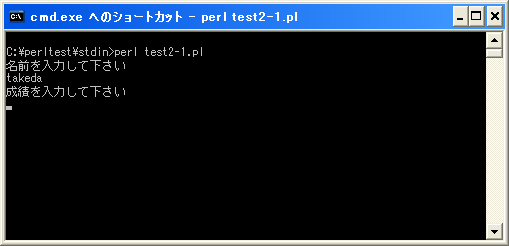
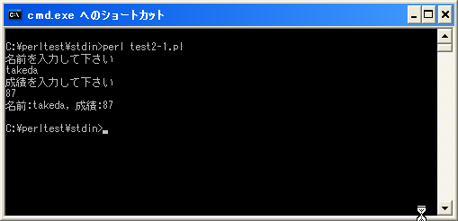

- Home ›
- Perl入門 ›
- 標準入力とコマンドライン引数
標準入力からの値の取得
前のページではプログラムの起動時にコマンドライン引数を使用して値を指定する方法を確認しました。ここではプログラムを実行後にユーザーからキーボードを使って値を入力してもらう方法を確認します。
プログラム実行中に何らかの入力を行うには行入力演算子の「<>」演算子を使用します。
変数 = <ファイルハンドル>
上記では指定したファイルハンドルから1行読み込んで変数に格納します。改行文字が現れるまでの値が1行です。
ファイルハンドルはまた別の箇所で詳しく説明しましが、現在開いているファイルを識別するためのものです。今回はファイルからの読み込みではなくキーボードから値を読み込みます。キーボードからの入力を行うには特別なファイルハンドルである「STDIN」を使用します。
変数 = <STDIN>
上記のように記述すると、「Enter」キーが押されるまでキーボードから入力された文字を変数に格納します。この時、「Enter」キーも改行として合わせて取得します。
例えば次のように記述します。
my $line = <STDIN>; print "入力された値 : $line";
このように記述すると、プログラムの実行中にこの部分に差し掛かるといったんプログラムの実行が中段し、キーボードからの入力待ちとなります。ユーザーがキーボードから値を入力して「Enter」キーを押すと入力された値が変数に格納されて次の行からプログラムが再開します。
なおキーボードから入力された値には改行が含まれています。改行を取り除くには「chomp」関数を使用します。(chomp関数については「chomp関数」を参照して下さい)。
my $line = <STDIN>; chomp($line); print "入力された値 : $line";
サンプルプログラム
では簡単なプログラムで確認して見ます。
use strict; use warnings; use utf8; binmode STDIN, ':encoding(cp932)'; binmode STDOUT, ':encoding(cp932)'; binmode STDERR, ':encoding(cp932)'; print "名前を入力して下さい¥n"; my $line = <STDIN>; chomp($line); print "成績を入力して下さい¥n"; my $seiseki = <STDIN>; chomp($seiseki); print "名前:$line, 成績:$seiseki¥n";
上記を「test2-1.pl」の名前で保存します(文字コードはUTF-8です)。そしてコマンドプロンプトを起動し、プログラムを保存したディレクトリに移動してから次のように実行して下さい。

プログラムを実行すると、名前の入力を求められます。そこで何か入力してから「Enter」キーを押して下さい。

もう一度今度は成績の入力を求められます。同じように何か入力して「Enter」キーを押して下さい。

入力された値を画面に表示して終了します。
( Written by Tatsuo Ikura )

著者 / TATSUO IKURA
初心者～中級者の方を対象としたプログラミング方法や開発環境の構築の解説を行うサイトの運営を行っています。